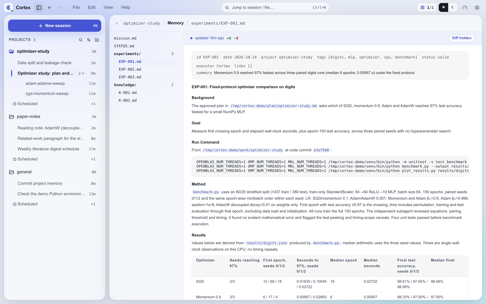

Cortex Memory System¶
Cortex stores all knowledge on the filesystem as atomized, indexed markdown files — the Dense Context structure. There is no vector database, no RAG pipeline, and no external knowledge store. The filesystem is the database. For how this fits into the broader system architecture, see architecture.md.
Why Atomized Memory¶
The core insight is that monolithic context files don't scale. A single EXPERIMENTS.md file grows unboundedly, making it expensive to load into agent context and hard to search. The solution is to atomize each experiment, knowledge entry, and pattern into its own file, with auto-generated indexes for fast lookup.
This design draws from academic work: Du 2026's survey of agent memory patterns, QMatSuite's layered knowledge hierarchy (finding → pattern → principle), and A-MEM's atomic notes with dynamic linking (< 4μs retrieval time at 1M memories).
Directory Layout¶
The knowledge root is ~/.cortex/context/, structured as follows:
context/
├── AGENTS.md # Root index — entry point for finding anything
├── OVERVIEW.md # Global overview: one-line status per project + last scan date
├── decisions/ # System-level design decisions (NNNN-title.md)
├── ideas/ # Incubating research directions
├── scans/ # Knowledge scan reports, one per date
├── user/ # User preferences (maintained by /user-learn)
│ └── USER.md # Language, style, working habits (< 3KB)
└── projects/ # One subdirectory per active research project
└── <project>/
├── AGENTS.md # Project-level index
├── mission.md # Goal and success conditions
├── roadmap.md # Milestones with testable checklist conditions
├── STATUS.md # Present-tense state register (overwriting, max 80 lines / 6KB)
├── ISSUES.md # Execution friction (append-only, resolved items deleted, max 80 lines / 6KB)
├── boards/ # One directory per board: board.html, assets/, decisions.jsonl
├── experiments/
│ ├── index.md # Auto-generated — do not edit manually
│ └── EXP-NNN.md # One file per experiment, YAML frontmatter
├── knowledge/
│ ├── index.md # Auto-generated
│ └── K-NNN.md # One file per knowledge entry
├── patterns/
│ ├── index.md # Auto-generated
│ └── PAT-NNN.md # One file per cross-experiment pattern
├── decisions/ # Project-level design decisions
└── _meta/
└── access-log.jsonl # Auto-tracked Read/Grep access log
cortex init seeds the root AGENTS.md and the indexes of ideas/, scans/, user/ and
projects/. The other files and directories appear as Cortex creates them: OVERVIEW.md and
decisions/ when there is something to record, USER.md from the user-learn skill, and each
project's files from the project-init skill and the work that follows.
The Three Atom Types¶
Experiments (EXP-NNN.md)¶
Each experiment is an atomic file recording a single investigation. An experiment records what was done, what was observed, what was concluded, and what should change going forward.
YAML frontmatter:
---
id: EXP-NNN
date: 2026-01-15
project: my-project
summary: "Baseline success rate with the default controller"
tags: [baseline, grasping, evaluation]
status: valid
executor: Cortex
links: [PAT-NNN]
---
Required fields: id, date, project, summary (at most 300 characters), tags. The index
generator skips a file without id; the other fields are convention, checked by the agent rather
than the code.
Optional fields: status, executor, links (related entries).
Frontmatter is parsed as YAML, so quote any list item that contains a comma, a colon followed by a space, or braces: evidence: ["log.txt (55 configs, 10 seeds)", "run{1,2}/metrics.json"].
Body structure: The markdown body follows a standard template with sections: Background, Execution, Results, Conclusion, and Reflection (goal attainment, unexpected findings, process defects, behavioral adjustments).
Status lifecycle: experiments, knowledge entries and patterns share one status field. A
status that points at another entry names it after a colon, such as superseded:EXP-012, and the
index generator classifies a status by its prefix.
| Status | Meaning | Index table |
|---|---|---|
active, valid, partial, or empty |
Normal, conclusions stand | Active |
challenged:EXP-NNN |
Questioned by a newer experiment, pending review | Active, and listed in Stats |
corrected:EXP-NNN |
Conclusion was corrected | Active |
superseded:EXP-NNN |
Replaced by a better version | Superseded / Deprecated |
deprecated |
No longer applies | Superseded / Deprecated |
refined:EXP-NNN |
Fully replaced by an improved version | Superseded / Deprecated |
stale |
No references for a long time, pending review | Superseded / Deprecated |
invalidated:EXP-NNN |
Proven wrong; the body is replaced with a tombstone warning | Invalidated |
Any other status counts as active.
Knowledge Entries (K-NNN.md)¶
Knowledge entries are atomic facts, anti-patterns, or heuristics distilled from experiments. Each must cite its source experiments in the evidence field.
YAML frontmatter:
---
id: K-NNN
date: 2026-02-01
project: my-project
summary: "ANTI-PATTERN: Comparing success rates across runs that used different random seeds and episode counts"
tags: [anti-pattern, evaluation, reproducibility]
evidence: [EXP-NNN, EXP-NNN, EXP-NNN]
---
Required fields: id, date, project, summary, tags, evidence.
Anti-pattern convention: Knowledge entries describing anti-patterns prefix the summary with ANTI-PATTERN: and include anti-pattern in tags.
Patterns (PAT-NNN.md)¶
Patterns synthesize invariants across multiple experiments. A pattern states a reusable observation that holds across a cluster of experiments.
YAML frontmatter:
---
id: PAT-NNN
date: 2026-02-01
project: my-project
summary: "Policies trained with domain randomization lose less success rate when moved from simulation to the real robot"
tags: [sim-to-real, domain-randomization, transfer]
source-experiments: [EXP-NNN, EXP-NNN, EXP-NNN]
evidence: [EXP-NNN, EXP-NNN, EXP-NNN]
---
Required fields: id, date, project, summary, tags, source-experiments (the experiments the pattern was extracted from).
Body structure: Observation, Evidence (table citing experiments with specific findings), Pattern Statement, Scope & Limitations, Implications.
Index Auto-Generation¶
Each directory under a project (experiments/, knowledge/, patterns/) has an index.md generated from the frontmatter of its atom files and the project's access log. The index opens with a # <Directory> Index — <project> heading and a Use when line, followed by the warning:
> Auto-generated from YAML frontmatter; Refs / Last ref come from _meta/access-log.jsonl. Do not edit manually. Not tracked by git.
> Last updated: 2026-02-15T09:00:00
The generator only reads the atom files; it never rewrites them. The server regenerates a project's indexes about two seconds after any .md file in one of its memory directories changes (projects created while the server runs are picked up as they appear), and the built-in regeneration job rebuilds every index on a schedule.
Index structure:
- Active table — every active entry (see the status table above), sorted by reference count (descending), with its reference count and last access date
- Superseded / Deprecated table — superseded, deprecated, refined and stale entries
- Invalidated table — tombstoned entries proven wrong
- Stats section — total counts, challenged entries under review, hot entries (refs >= 5), cold entries (refs = 0, age > 14 days), and any atom file whose frontmatter is not valid YAML (it is still indexed, read key by key, and should be fixed)
Rebuild command:
# For all projects
cortex memory regen
# For a specific project
cortex memory regen --project <project-name>
--project can be repeated, and an unknown project name is an error. The command prints JSON
listing each project with the paths of its regenerated indexes.
Access Tracking¶
Cortex automatically tracks which experiment, knowledge, and pattern files are accessed during research. This is implemented as the built-in memory-ref-tracker.mjs hook on agent:post-tool (see hooks.md for the full hook system).
How it works:
- After every
ReadorGreptool call, the hook checks if the accessed file path matches the pattern/(experiments|knowledge|patterns)/(EXP-\d+[a-z]?|K-\d+|PAT-\d+)\.md$/ - If matched, it extracts the project name from the path and appends a JSON line to
_meta/access-log.jsonl: - A
Grepis tracked when its search path lies inside a project'sexperiments/,knowledge/orpatterns/directory. The hook appends one line for each distinct atom file named in the output - If such a
Grepnames no atom file, it records_directory_searchinstead - When
CORTEX_HOMEis a git repository, the hook commits the access log with messagechore: update access log; if other changes are already staged, it stages the log without committing
Reference counts exist only in the generated indexes: each rebuild counts a file's lines in the access log, so a file that is frequently read during research gets a higher count and appears higher in the index. Older atom files may still carry refs: and last-ref: frontmatter fields; nothing maintains or reads them.
Project Log Files¶
Each project has a set of governance files that together form its operational memory:
mission.md — The Constitution¶
Defines the project's goal, success conditions, and scope boundaries. This file is stable and should only change with explicit user approval. It answers: what are we trying to achieve, and how will we know we've succeeded?
roadmap.md — Milestone Map¶
Layered phases, each containing milestones with testable checklist conditions. Completed milestones are preserved with checkmarks (not deleted). The roadmap shows where the project has been, where it is now, and where it's going.
STATUS.md — Current Snapshot¶
An overwriting (not append-only) state register capturing the project's present tense — the minimal state a fresh session needs to continue correctly. Hard-capped at 80 lines and 6KB, with each bullet at most 2 lines. Required sections: current situation, in-flight work & new variables, blockers & pending decisions, next step. Facts that have a durable home elsewhere (experiments, knowledge entries, decision records, commits) appear only as pointers; the file grows with state complexity, never with project age. Updated when the situation changes — not on every task completion. This is the first file to read when resuming work on a project after a gap.
ISSUES.md — Execution Friction¶
An append-only log of problems that slow work, capped at 80 lines and 6KB with each entry at most 4 lines. An entry is a dated title, a one-line symptom, and a one-line root cause with a pointer to the detailed investigation (knowledge entry, report, or experiment record). Resolved issues are deleted from the file (not archived).
decisions/ — Decision Records¶
Each decision is one file named NNNN-title.md, headed # DR-NNNN: <Title>. System-level decisions live in context/decisions/, project decisions in the project's decisions/, and each level numbers its records from 0001. A record lists Date, Status (accepted, rejected, or superseded), an optional Supersedes, and Evidence, followed by the sections Context, Options Considered (at least two), Decision, and Consequences.
Dense Context Conventions¶
The Dense Context system follows these operational conventions:
- Every directory has an AGENTS.md index — describing the directory's purpose, file list, and lookup rules. Indexes are pointer-style (one sentence + pointer per line, one line per atomic directory) and hard-capped at 120 lines and 8KB, matching the context-injection budget. The shipped
status-md-guardhook rejects anEditorWritethat would push a contextAGENTS.md, aSTATUS.mdor anISSUES.mdpast its cap; a write that shrinks an oversized file is allowed - Create file → update index — when adding a new file to a directory, update that directory's AGENTS.md
- Overwrite vs. append — STATUS.md overwrites (only current state); ISSUES.md appends then deletes; experiments/knowledge/patterns append and stay
- Provenance is mandatory — every factual claim must trace to a specific EXP-NNN, K-NNN, file:line, or inline calculation
- Persist after each work unit — save context updates to disk after each logical work unit. Git history is optional
Who Loads AGENTS.md¶
AGENTS.md is the name both supported backends already look for, so most of the time Cortex does
not inject anything — the backend does it.
| Where the file sits | Claude Code | PI | Loaded by |
|---|---|---|---|
| An ancestor of the session working directory | yes | yes | the backend |
| A subdirectory of the working directory, when a file there is read | yes | no | the backend on Claude, the agents-md-injector hook on PI |
| Outside the working directory tree | no | no | the agents-md-injector hook |
AGENTS.local.md, anywhere |
no | no | the agents-md-injector hook |
On a remote device, via remote_read / remote_write / remote_edit |
no | no | the cortex-client scanner, injected as extra tool-result blocks |
Sessions run in the Cortex home directory by default, so ~/.cortex/AGENTS.md and every index
under context/ is an ancestor or a subdirectory of the working directory and arrives natively.
The hook exists for the remaining rows, and it records what the backend already loaded in a shared
per-session cache so the same rules are never delivered twice.
Two consequences worth knowing:
- A
CLAUDE.mdanywhere in the ancestor chain switches Claude'sAGENTS.mdfallback off completely — it is an all-or-nothing choice governed by theclaude-md-or-agents-mdsetting, not a per-directory merge. The hook detects this and resumes injecting so no rules are lost, but mixing the two names in one tree is still best avoided. - Neither backend reads a
.localvariant.AGENTS.local.mdis a Cortex-only convention for machine-specific rules, delivered by the hook and kept out of git.
Browsing Memory in the Workbench¶

The Web workbench shows a project's memory read-only. On desktop, View → Memory or Open memory
viewer on the project's Overview opens it; on a phone, it is Project memory in the Projects
panel. It lists mission.md, roadmap.md, STATUS.md, and the files in experiments/,
knowledge/, patterns/ and decisions/ (without the generated index.md), renders the selected
file, and, when the project is in a git work tree, shows how many lines differ from HEAD and the
latest change behind each line.
Fresh Session Test¶
The acid test for Dense Context quality: if you start a fresh session with only read access to the repo, can you learn everything the previous session knew? If the answer is no, something wasn't recorded properly.
Memory Index Regeneration Job¶
The built-in memory-index regeneration job rebuilds all index files from YAML frontmatter. memoryIndexRegenEnabled (default true) and memoryIndexRegenIntervalMs (default 24 hours) in config/settings.json control it. The job:
- Scans all projects under
context/projects/ - Reads frontmatter from every
EXP-*.md,K-*.md, andPAT-*.md - Counts references per file from
_meta/access-log.jsonl - Writes each
index.mdatomically, leaving the atom files untouched
Lifecycle: Knowledge Maintenance¶
cortex memory consolidate reviews every project's experiments, knowledge entries and patterns and reports what needs attention. It prints JSON, or a readable summary with --text, and changes no files. It reports:
- Consolidation candidates — experiments that share tags or link to each other closely enough to merge, and chains of supersessions
- Contradictions — knowledge entries and patterns whose evidence experiments are invalidated, superseded or deprecated, marked as fully or partially compromised
- Stale candidates — active entries older than 30 days with no references in the access log
- Anti-pattern signals — process deficiencies that recur across experiments' reflections
Scale¶
Index rebuilds stay cheap as projects grow. A rebuild parses only each file's YAML frontmatter, so regenerating every project's indexes at once — each project holding tens of experiments and a handful of knowledge entries and patterns — finishes in under a second.